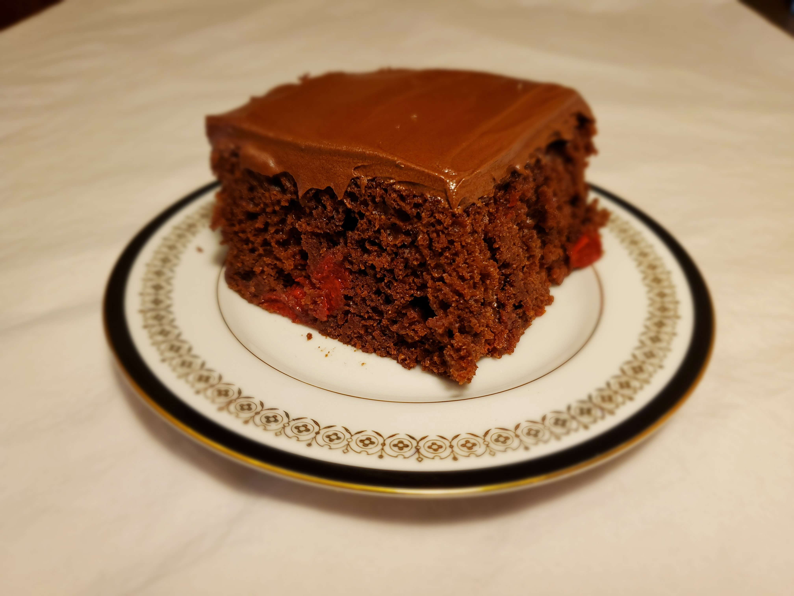

This is a recipe for "Hazel's Cherry Chocolate Cake"
Ingredients
- One 9 inch X 13 inch cake pan.
- 1 tbsp. of soft butter.
- Small amount of all purpose flour.
- 3 large eggs at room temperature.
- One 15.25 oz. package of Duncan Hines Perfectly Moist Devil's Food Cake Mix.
- One 21 oz. can of Lucky Leaf Cherry fruit filling & topping.
- One 12 oz. package of Betty Crocker Whipped Chocolate Frosting.
Directions
- Prepare pan by using your clean fingers to smear the soft butter around the bottom and sides of the pan. Sprinkle with all purpose flour and shake off any excess.
- Beat the room temperature eggs until light and fluffy.
- Preheat oven to 350 degrees.
- Combine cake mix and beaten eggs and mix well. Add the cherry filling and mix until blended. (Don't use an electric mixer on this step).
- Fill the cake pan.
- When oven reached 350 degrees, place the cake pan on the center rack and bake for 35-40 minutes. After about 30 minutes, begin testing the cake with a toothpick near the center. If the toothpick comes out clean, the cake is done.
- Wait until cake has completely cooled.
- Empty the package of frosting into a bowl, add 3 tsp. of water, and whip air into it using an electric mixer. This increases the volume and makes it easier to spread.
- Frost the cake.
- Enjoy.
Download Recipe